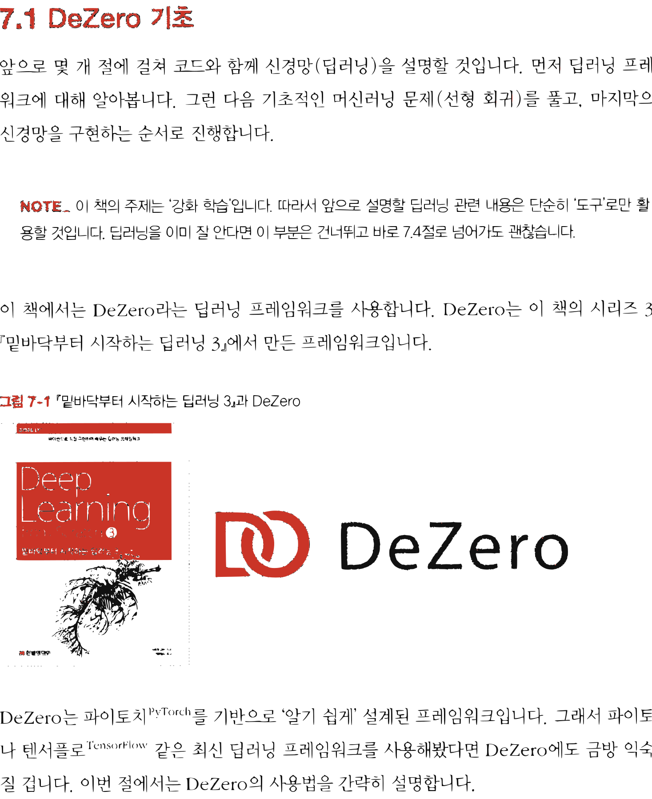

11.1 DeZero 기초
그림 11-1 지니가 들려주는 DeZero 상자 속의 장난감 블록(Variable, Function) 조각들을 끼워 맞춰 보며 딥러닝 연산을 배우는 도로시와 토토
인공신경망 코딩 실습을 위해 이 책에서 사용할 초경량 딥러닝 프레임워크인 DeZero의 핵심 사용법을 공부합니다. 파이토치(PyTorch)와 형제처럼 닮아 매우 직관적인 DeZero의 기본 다차원 배열 변수(Variable) 선용법과 순전파/역전파 계산 메커니즘을 요정 지니의 블록 놀이 비유로 신나게 터득해 봅시다!
앞으로 몇 개 절에 걸쳐 코드와 함께 신경망(딥러닝)을 설명할 것입니다. 먼저 딥러닝 프레임워크에 대해 알아봅니다. 그런 다음 기초적인 머신러닝 문제(선형 회귀)를 풀고, 마지막으로 신경망을 구현하는 순서로 진행합니다.
[!NOTE] 이 책의 주제는 ‘강화 학습’입니다. 따라서 앞으로 설명할 딥러닝 관련 내용은 단순히 ‘도구’로만 활용할 것입니다. 딥러닝을 이미 잘 안다면 이 부분은 건너뛰고 바로 7.4절로 넘어가도 괜찮습니다.
이 책에서는 DeZero라는 딥러닝 프레임워크를 사용합니다. DeZero는 이 책의 시리즈 3권 『밑바닥부터 시작하는 딥러닝 3』에서 만든 프레임워크입니다.
그림 11-1 『밑바닥부터 시작하는 딥러닝 3』과 DeZero

DeZeroDeZero는 파이토치PyTorch를 기반으로 ‘알기 쉽게’ 설계된 프레임워크입니다. 그래서 파이토치나 텐서플로TensorFlow 같은 최신 딥러닝 프레임워크를 사용해봤다면 DeZero에도 금방 익숙해질 겁니다. 이번 절에서는 DeZero의 사용법을 간략히 설명합니다.
[!NOTE] DeZero는 파이토치의 ‘사투리’와 같은 프레임워크이므로 DeZero용 코드를 파이토치 코드로 쉽게 변환할 수 있습니다. 그래서 이 책의 예제를 모아둔 깃허브에 파이토치 버전 코드도 준비해뒀습니다. 파이토치를 이용하고 싶은 분은 해당 코드를 참고하기 바랍니다.
11.1.1 DeZero 사용법
먼저 DeZero를 설치합니다. 다음과 같이 pip로 간단하게 설치할 수 있습니다.
$ pip install dezero
설치가 끝나면 DeZero를 사용해봅시다. 먼저 Variable 클래스부터 살펴보겠습니다. Variable은 넘파이의 다차원 배열(np.ndarray)을 감싸는 클래스입니다. 다음과 같이 사용합니다.
import numpy as np
from dezero import Variable # ❶ dezero 모듈에서 Variable 임포트
x_np = np.array(5.0)
x = Variable(x_np) # ❷ Variable 인스턴스 생성
y = 3 * x ** 2 # ❸ 넘파이 다차원 배열처럼 사용
print(y)
출력 결과
variable(75.0)
❶ dezero 모듈에서 Variable 클래스를 가져왔고 ❷ x = Variable(x_np) 코드로 Variable 인스턴스를 생성했습니다. 이후로는 마치 넘파이 다차원 배열(np.ndarray)을 다루듯이 계산식에 바로 쓸 수 있습니다. ❸ 그래서 y = 3 * x ** 2 코드가 실행되면 바로 75.0이라는 결과를 얻을 수 있습니다.
이제 미분을 구해보겠습니다. Variable 변수에는 미분을 수행하는 backward() 메서드가 준비되어 있습니다. 앞의 코드에 이어서 다음 코드를 실행하면 됩니다.
y.backward()
print(x.grad)
출력 결과
variable(30.0)
이 코드에서 y는 Variable 인스턴스입니다. Variable 인스턴스에서 backward() 메서드를 호출하면 역전파backpropagation가 수행되어 각 변수의 미분을 구할 수 있습니다.
참고로 앞의 코드 ❸에서 $y = 3 \times x ** 2$ 계산을 하였는데 수식으로는 $y = 3x^2$에 해당합니다. 이를 미분하면 $\frac{dy}{dx} = 6x$이므로 여기에 $x = 5$를 대입하면 30이 됩니다. 지금의 출력 결과와 똑같은 것을 알 수 있습니다.
11.1.2 다차원 배열(텐서)과 함수
머신러닝에서는 일반적으로 다차원 배열(텐서)을 다룹니다. 다차원 배열은 여러 개의 숫자(원소)를 한꺼번에 다루기 위한 데이터 구조입니다. 원소의 배열에는 ‘방향’이 있으며 그 방향을 ‘차원dimension’ 또는 ‘축axis‘이라고 합니다. [그림 11-2]는 다차원 배열의 예입니다.
그림 11-2 다차원 배열의 예
스칼라
[ 1 ]
벡터
[ 1 | 2 | 3 ]
행렬
[ 1 | 2 | 3 ]
[ 4 | 5 | 6 ]
그림에서 왼쪽부터 0차원 배열, 1차원 배열, 2차원 배열입니다. 각각 스칼라, 벡터, 행렬이라고 하죠. 스칼라scalar는 단순히 하나의 숫자를 나타냅니다. 벡터vector는 하나의 축을 따라 숫자들이 나열되어 있고, 행렬matrix은 축이 두 개로 늘어납니다. 참고로 다차원 배열은 텐서tensor라고도 합니다. 그래서 [그림 11-2]의 예는 왼쪽부터 차례로 0층 텐서, 1층 텐서, 2층 텐서입니다.
다음으로 벡터의 내적을 알아보겠습니다. 두 개의 벡터 $a = (a_1, \dots, a_n)$과 $b = (b_1, \dots, b_n)$이 있다고 해보죠. 이때 벡터의 내적은 [식 8.1]과 같이 정의됩니다.
\(a \cdot b = a_1 b_1 + a_2 b_2 + \dots + a_n b_n\) [식 8.1]
이 식과 같이 두 벡터에서 ‘대응하는 원소의 곱을 모두 더한 것’이 벡터의 내적입니다.
[!NOTE] 수식에서 기호를 표기할 때 스칼라는 $a, b$처럼 표기합니다. 반면 벡터나 행렬은 $\mathbf{a}, \mathbf{b}$처럼 굵게 표기합니다.
마지막으로 행렬의 곱에 대해 설명하겠습니다. 행렬 곱은 [그림 11-3]과 같은 절차대로 계산합니다.
그림 11-3 행렬 곱 계산 방법
$1 \times 5 + 2 \times 7$ $\mathbf{a} \quad \mathbf{b} = \mathbf{c}$
그림과 같이 행렬 곱에서는 왼쪽 행렬의 ‘가로 벡터’와 오른쪽 행렬의 ‘세로 벡터’ 사이의 내적을 계산합니다. 그리고 그 결과가 새로운 행렬의 해당 원소가 됩니다. 예를 들어 $\mathbf{a}$의 1행과 $\mathbf{b}$의 1열의 내적이 $\mathbf{c}$의 1행 1열 원소가 되고, $\mathbf{a}$의 2행과 $\mathbf{b}$의 1열의 내적이 $\mathbf{c}$의 2행 1열 원소가 되는 식입니다.
이제 DeZero를 사용하여 벡터의 내적과 행렬 곱을 계산해보죠. 이 계산에는 dezero.functions 패키지의 matmul() 함수를 사용합니다.
import numpy as np
from dezero import Variable
import dezero.functions as F # ❶
# 벡터의 내적
a = np.array([1, 2, 3])
b = np.array([4, 5, 6])
a, b = Variable(a), Variable(b) # 생략 가능
c = F.matmul(a, b) # ❷
print(c)
# 행렬 곱
a = np.array([[1, 2], [3, 4]])
b = np.array([[5, 6], [7, 8]])
c = F.matmul(a, b) # ❸
print(c)
출력 결과
variable(32)
variable([[19 22]
[43 50]])
❶ 가장 먼저 dezero.functions 패키지를 F라는 이름으로 임포트했습니다. 그러면 DeZero의 함수를 F.matmul() 형태로 사용할 수 있죠. 코드에서 보듯이 ❷ 벡터의 내적과 ❸ 행렬 곱 모두 F.matmul() 함수로 계산합니다.
[!NOTE] DeZero의 함수들은
np.ndarray인스턴스를 직접 처리할 수 있습니다(DeZero 내부에서Variable인스턴스로 변환). 따라서 앞의 코드에서 넘파이 배열인a와b를 명시적으로Variable인스턴스로 변환하지 않고도F.matmul()에 직접 입력할 수 있습니다.
참고로 행렬이나 벡터를 이용한 계산에서는 ‘형상shape‘에 주의해야 합니다. 예를 들어 행렬 곱 계산에서는 행렬들 사이에 [그림 11-4]와 같은 관계가 성립합니다.
그림 11-4 행렬 곱에서는 해당 차원(축)의 원소 개수를 일치시켜야 한다.
$\quad\quad\mathbf{a} \quad\quad \mathbf{b} \quad = \quad \mathbf{c}$ 형상: $(3 \times 2) (2 \times 4) \quad (3 \times 4)$
$3 \times 2$ 행렬 $\mathbf{a}$와 $2 \times 4$ 행렬 $\mathbf{b}$를 곱해 $3 \times 4$ 행렬 $\mathbf{c}$가 만들어졌습니다. 그림과 같이 행렬 $\mathbf{a}$와 $\mathbf{b}$
에 해당하는 차원(축)의 원소 수가 일치해야 계산이 이루어질 수 있습니다.
11.1.3 최적화
이번에는 DeZero를 이용하여 간단한 문제를 풀어보죠. 다음 함수의 최솟값을 구해보겠습니다.
\[y = 100(x_1 - x_0^2)^2 + (x_0 - 1)^2\]이 함수를 로젠브록 함수rosenbrock function라고 합니다. 로젠브록 함수는 진정한 최솟값을 찾기가 어렵고, 함수의 형태가 특징적이기 때문에 최적화 벤치마크 용도로 널리 쓰입니다. 목표는 로젠브록 함수의 출력이 최소가 되는 $x_0$과 $x_1$ 찾기입니다. 정답부터 말하자면 로젠브록 함수의 최솟값은 $(x_0, x_1) = (1, 1)$에 있습니다. 이제부터 DeZero로도 이 최솟값을 찾을 수 있는지 확인해보겠습니다.
[!NOTE] 함수가 최솟값(또는 최댓값)이 되게 하는 ‘인수(입력)’를 찾는 작업을 최적화라고 합니다. 지금 우리의 목표는 DeZero를 사용하여 최적화 문제를 푸는 것입니다.
우선 로젠브록 함수 $(x_0, x_1) = (0.0, 2.0)$의 미분을 구하겠습니다(수식으로는 $\frac{\partial y}{\partial x_0}$와 $\frac{\partial y}{\partial x_1}$).
import numpy as np
from dezero import Variable
def rosenbrock(x0, x1):
y = 100 * (x1 - x0 ** 2) ** 2 + (x0 - 1) ** 2
return y
x0 = Variable(np.array(0.0))
x1 = Variable(np.array(2.0))
y = rosenbrock(x0, x1)
y.backward()
print(x0.grad, x1.grad)
출력 결과
variable(-2.0) variable(400.0)
이와 같이 먼저 Variable로 수치 데이터 (np.ndarray 인스턴스)를 감싸주면, 그다음은 수식에 맞게 코딩만 하면 됩니다. 이후 y.backward()를 호출하면 미분이 자동으로 계산됩니다.
이 코드를 실행하면 x0과 x1의 미분, 즉 $\frac{\partial y}{\partial x_0}$와 $\frac{\partial y}{\partial x_1}$는 각각 $-2.0$과 $400.0$이라고 나옵니다. 이때 두 미분값($-2.0, 400.0$)을 모아 만든 벡터를 기울기gradient 또는 기울기 벡터gradient vector라고 합니다. 기울기는 각 지점에서 함수의 출력을 가장 크게 증가시키는 방향을 가리킵니다. 지금 예에서 $(x_0, x_1) = (0.0, 2.0)$ 위치에서 y의 값을 가장 크게 증가시키는 방향이 $(-2.0, 400.0)$이라는 뜻입니다. 반대로, 기울기에 마이너스를 곱한 $(2.0, -400.0)$ 방향은 y의 값을 가장 크게 ‘감소’시키는 방향이라는 뜻이기도 합니다.
[!NOTE] 형태가 복잡한 함수라면 기울기가 가리키는 방향에 최댓값이 없을 때도 많습니다. 마찬가지로 기울기의 반대 방향에 최솟값이 없을 수 있습니다. 하지만 좁은 범위로 한정하면 기울기는 함수의 출력을 가장 크게 만드는 방향을 가리킵니다. 따라서 기울기 방향으로 일정 거리만큼 이동하고, 그 지점에서 다시 기울기를 구하는 일을 반복하면 점차 원하는 지점(최댓값이나 최솟값)에 가까워지리라 기대할 수 있습니다. 이것이 바로 경사 하강법gradient descent입니다.
이제 경사 하강법을 우리 문제에 적용해봅시다. 지금 우리는 로젠브록 함수의 ‘최솟값’을 찾는 중입니다. 따라서 기울기에 마이너스를 곱한 방향으로 진행해야 합니다. 이 점만 주의하면 다음과 같이 간단하게 구현할 수 있습니다.
x0 = Variable(np.array(0.0))
x1 = Variable(np.array(2.0))
iters = 10000 # # 반복 횟수
lr = 0.001 # # 학습률
for i in range(iters): # # 갱신 반복
print(x0, x1)
y = rosenbrock(x0, x1)
# 이전 반복에서 더해진 미분 초기화
x0.cleargrad()
x1.cleargrad()
# 미분(역전파)
y.backward()
# 변수 갱신
x0.data -= lr * x0.grad.data
x1.data -= lr * x1.grad.data
print(x0, x1)
먼저 갱신을 반복할 횟수(iters)와 기울기에 곱할 학습률(lr)을 미리 설정해둡니다. iters는 iterations를 줄인 단어이고 lr은 learning rate (학습률)의 머리글자를 조합한 것입니다.
실제 변수 갱신은 x0.data -= lr * x0.grad.data 코드에서 수행합니다. 여기서 x0과 x0.grad는 모두 Variable 인스턴스라는 점에 주목합시다. 실제 데이터(np.ndarray)는 x0.data와 x0.grad.data처럼 .data 속성에 저장되어 있습니다. 그리고 지금은 단순히 데이터를 갱신할 뿐이므로 .data 속성으로 직접 계산했습니다. 만약 (.data 속성이 아닌) Variable 인스턴스에 대해 계산하면 나중에 역전파를 하기 위한 계산을 추가로 해줘야 합니다.
[!NOTE] 지금 코드의 for문에서는 Variable 인스턴스인 x0과 x1을 반복해서 사용하며 미분을 구합니다. 이 반복 과정에서 x0.grad와 x1.grad에 미분값이 계속 더해지기 때문에, 새로운 미분을 구할 때는 기존에 추가된 미분을 초기화해야 합니다. 그래서 역전파 전에 각 변수의
cleargrad()메서드를 호출하여 미분을 초기화하고 있습니다.
이제 코드를 실행해봅시다. 그러면 (x0, x1)의 값이 갱신되어 최종적으로 다음의 결과를 얻을 수 있습니다.
출력 결과
variable(0.9944984367782456)
variable(0.9890050527419593)
이번 문제의 정답은 $(1.0, 1.0)$입니다. 출력 결과가 완벽히 정확하지는 않지만 대략적으로 가
까운 값을 얻을 수 있었습니다.
이것으로 DeZero의 기초를 알아보았습니다. 다음 절에서는 DeZero를 사용하여 머신러닝 문제를 풀어보겠습니다.